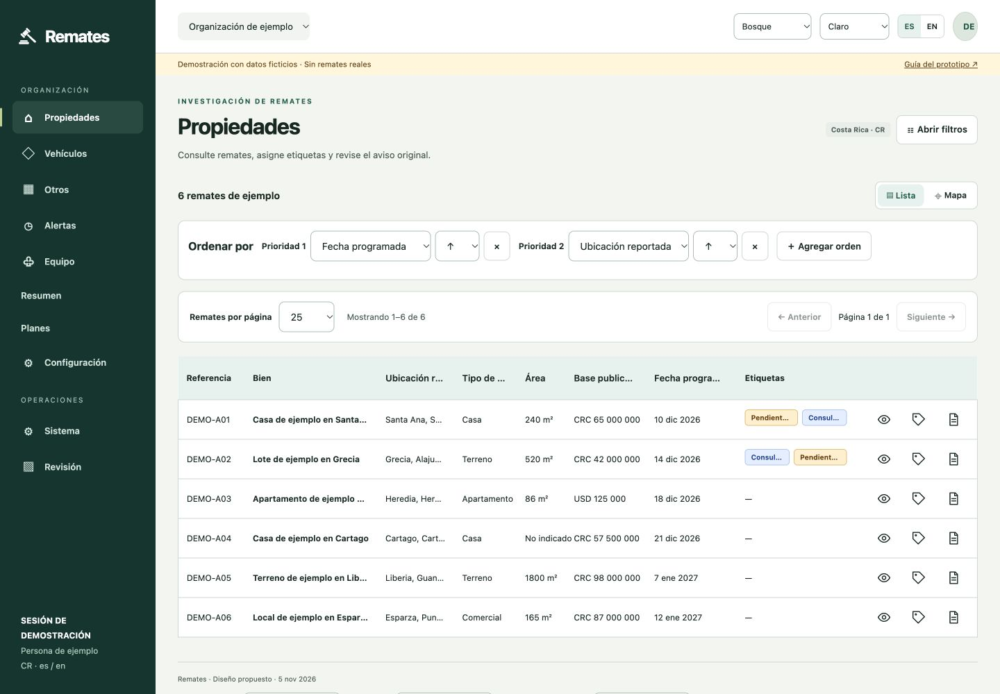

Desktop and mobile mockup gallery
Spanish viewport snapshots of the editable prototype. Desktop is 1440 × 1000; mobile is 390 × 1000. Images show the top of each scrollable page. Open a snapshot at full size, or follow the corresponding interactive screen.
Separate filter view
Interactive Spanish · Interactive English


Properties listing
Interactive Spanish · Interactive English


Vehicles listing
Interactive Spanish · Interactive English


Other listing
Interactive Spanish · Interactive English


Conceptual map
Interactive Spanish · Interactive English


Asset detail
Interactive Spanish · Interactive English


Member Images tab
Interactive Spanish · Interactive English


Notice and evidence
Interactive Spanish · Interactive English


Workspace overview
Interactive Spanish · Interactive English


Saved filters and alerts
Interactive Spanish · Interactive English


Organization roles
Interactive Spanish · Interactive English


Plan proposals
Interactive Spanish · Interactive English


Extraction review
Interactive Spanish · Interactive English


Operational settings as MANAGER
Interactive Spanish · Interactive English


System access without SYSADMIN
Interactive Spanish · Interactive English


Clerk sign in concept
Interactive Spanish · Interactive English


Colored tags
Assigned tag labels appear in the table. ADMIN/MANAGER can choose a definition color; USER assigns existing tags.


Column tables and prioritized sorting
Sortable headers and Add sort define ordered priorities. Production applies that order before paging; the offline adapter demonstrates the behavior.

Item pagination and selectable page size
Server-side pagination is specified for all item listings. This offline preview simulates page 2 at size 5 over fictional fixtures. Interactive second page · Empty response example


Localized name: Auctions / Remates
The name follows the interface language and has no version badge. English desktop sign-in · English mobile sign-in · Spanish sign-in. Editable wordmarks for both languages are in Brand assets.


Save and retrieve in a separate filter view
Open filters from the listing. Save creates a named draft; Retrieve loads one you own. Apply returns to results and Cancel leaves prior results intact.


Grouped AND/OR filters
Open the separate filter view to edit AND/OR groups, save named drafts and retrieve your own definitions. Draft edits are applied explicitly, and saved filters retain parentheses and ownership. Editable JSON examples


Single filter form
The grouped form is in a separate view opened from the listing; Save and Retrieve live there. No standalone Search action. Expanded mobile filter panel

Reference-based gavel logo
Preview editable light/dark logo assets · Usage guidance

Solo organization
A one-member organization uses the same roles and ownership model. Open Team and choose Solo organization in the organization switcher.


Settings as ADMIN
Use the Role preview control to inspect this state in the interactive mockup.


Settings as USER
Use the Role preview control to inspect this state in the interactive mockup.


SYSADMIN system configuration and operations
In System role preview, select SYSADMIN. This grant is independent of the organization role. The example below uses organization USER plus SYSADMIN; country remains read-only. For extraction review, enable SYSADMIN first.


User-owned saved filters
Save filters, then switch organizations: it remains in the same user’s Alerts, with its original execution context shown. This is separate from auction tagging; no Saved auction collection exists.